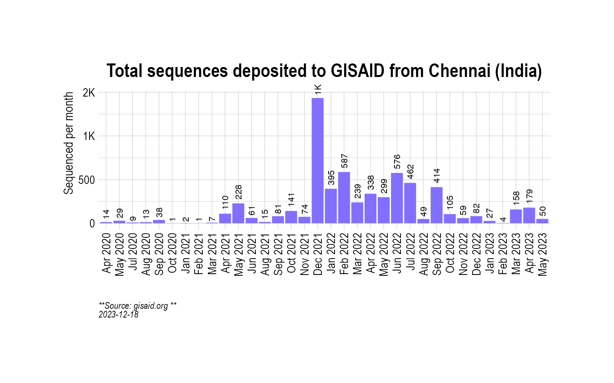
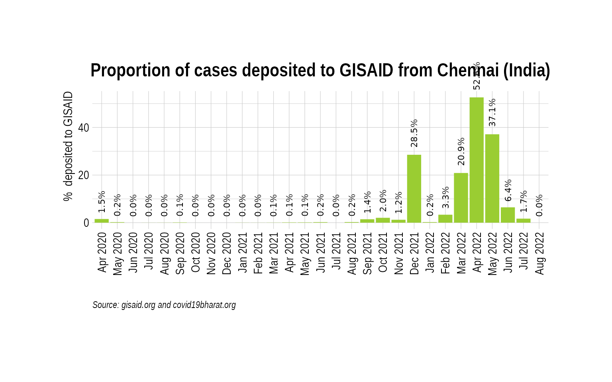
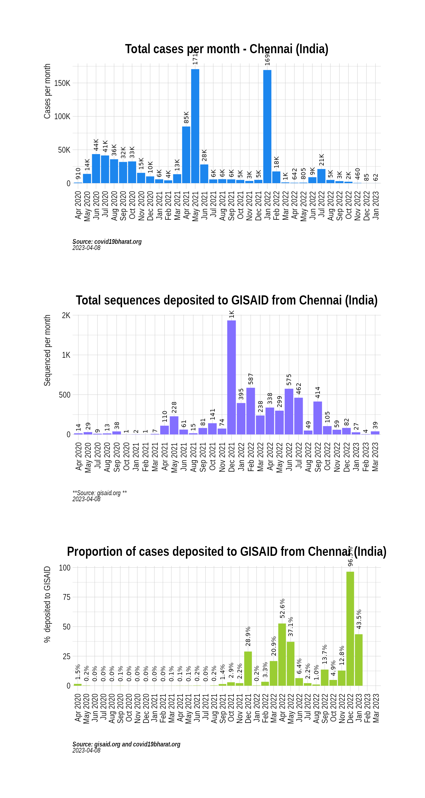
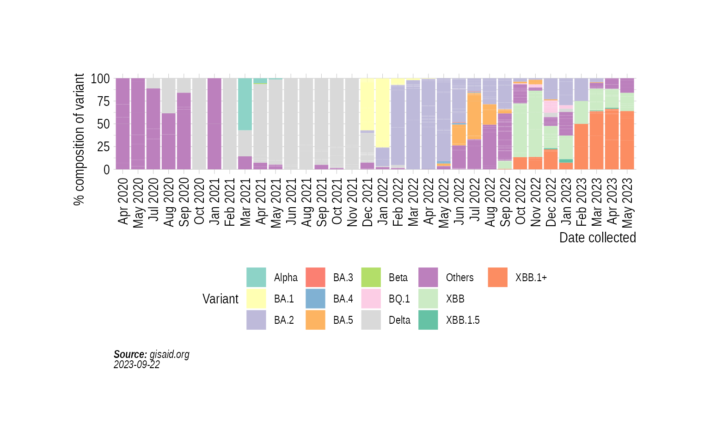

Animation of projected weekly cases - Chennai (India)
Source:vignettes/VariantAnimation-Chennai.Rmd
VariantAnimation-Chennai.Rmd
suppressPackageStartupMessages({
library(covmuller)
library(tidyverse)
})
theme_set(CovmullerTheme())Get variants data for India
gisaid_metadata <- qs::qread("~/data/epicov/metadata_tsv_2023_10_28.qs")
gisaid_india <- FilterGISAIDIndia(gisaid_metadata_all = gisaid_metadata)
vocs <- GetVOCs()
omicron <- vocs[["omicron"]]
vocs[["omicron"]] <- NULL
custom_voc_mapping <- list(
`BA.1` = "BA.1",
`BA.1.*` = "BA.1",
`BA.2` = "BA.2",
`BA.2.*` = "BA.2",
`BA.3` = "BA.3",
`BA.3.*` = "BA.3",
`BA.4` = "BA.4",
`BA.4.*` = "BA.4",
`BA.5` = "BA.5",
`BA.5.*` = "BA.5",
`XBB` = "XBB",
`XBB.1` = "XBB.1+",
`XBB.1.*` = "XBB.1+",
`XBB.1.5` = "XBB.1.5",
`BQ.1` = "BQ.1",
`BQ.1.*` = "BQ.1"
)
gisaid_india <- gisaid_india %>%
filter(pangolin_lineage != "None") %>%
filter(pangolin_lineage != "Unassigned")
gisaid_india$District <- stringr::str_to_title(gisaid_india$District)
gisaid_india$City <- stringr::str_to_title(gisaid_india$City)
gisaid_india$custom_city <- gisaid_india$City
gisaid_india$custom_city[gisaid_india$custom_city == ""] <- gisaid_india$District[gisaid_india$custom_city == ""]
gisaid_india$custom_city[gisaid_india$custom_city == ""] <- "Unknown"
gisaid_india$custom_city <- stringr::str_to_title(gisaid_india$custom_city)
gisaid_india <- CollapseLineageToVOCs(
variant_df = gisaid_india,
vocs = vocs,
custom_voc_mapping = custom_voc_mapping,
summarize = FALSE
)Get monthly cases for Chennai
chennai_monthly_cases <- GetIndiaConfirmedCasesMonthlyLong(level = "district") %>% filter(District == "Chennai")## Rows: 661869 Columns: 8
## ── Column specification ────────────────────────────────────────────────────────
## Delimiter: ","
## chr (2): State, District
## dbl (5): Confirmed, Recovered, Deceased, Other, Tested
## date (1): Date
##
## ℹ Use `spec()` to retrieve the full column specification for this data.
## ℹ Specify the column types or set `show_col_types = FALSE` to quiet this message.
head(chennai_monthly_cases)## # A tibble: 6 × 4
## # Groups: MonthYear, State [6]
## MonthYear State District value
## <yearmon> <chr> <chr> <dbl>
## 1 Apr 2020 Tamil Nadu Chennai 910
## 2 May 2020 Tamil Nadu Chennai 13889
## 3 Jun 2020 Tamil Nadu Chennai 43528
## 4 Jul 2020 Tamil Nadu Chennai 41467
## 5 Aug 2020 Tamil Nadu Chennai 35803
## 6 Sep 2020 Tamil Nadu Chennai 31779
Get weekly cases for Chennai
chennai_seq_stats <- TotalSequencesPerMonthCountrywise(gisaid_india %>% filter(custom_city == "Chennai"), rename_country_as_state = TRUE)
p2 <- BarPlot(chennai_seq_stats, ylabel = "Sequenced per month", color = "slateblue1", label_si = TRUE, title = "Total sequences deposited to GISAID from Chennai (India)", caption = "**Source: gisaid.org **<br>")
p2
Overall, how much has Chennai sequenced over months?
While the absolute numbers are informative, a more useful metric is the proportion of cases (cases sequenced over total cases) that are getting sequenced. Here we look at the proportion of cases that have been sequenced in India over the course of the pandemic:
chennai_monthly_cases_tmp <- chennai_monthly_cases %>% select(MonthYear, value)
chennai_monthly_cases_tmp$State <- "India"
chennai_monthly_cases_tmp$type <- "Confirmed"
chennai_monthly_cases_tmp <- chennai_monthly_cases_tmp %>% select(MonthYear, State, value, type)
sequencing_proportion <- CombineSequencedCases(
cases_sequenced = chennai_seq_stats,
confirmed_long = chennai_monthly_cases_tmp
)
p3 <- BarPlot(sequencing_proportion, yaxis = "percent_sequenced_collected", ylabel = "% deposited to GISAID", color = "yellowgreen", title = "Proportion of cases deposited to GISAID from Chennai (India)", caption = "**Source: gisaid.org and covid19bharat.org**<br>")
p3
p1 / p2 / p3
Distribution of variants
state_month_counts <- SummarizeVariantsMonthwise(gisaid_india %>% filter(custom_city == "Chennai"))
state_month_counts$State <- "Chennai"
state_month_prevalence <- CountsToPrevalence(state_month_counts)
vocs <- GetVOCs()
omicron <- vocs[["omicron"]]
vocs[["omicron"]] <- NULL
state_month_prevalence <- CollapseLineageToVOCs(
variant_df = state_month_prevalence,
vocs = vocs,
custom_voc_mapping = custom_voc_mapping, summarize = FALSE
)
p5 <- StackedBarPlotPrevalence(state_month_prevalence)
p5
Project weekly cases to variant prevalence data from GISAID
confirmed_subset_dateweekwise_long <- GetIndiaConfirmedCasesWeeklyLong(level = "district")
gisaid_dist_weekwise <- SummarizeVariantsWeekwise(gisaid_india %>% filter(custom_city == "Chennai") %>% arrange(WeekYearCollected))
confirmed_subset_dateweekwise_long_dist <- confirmed_subset_dateweekwise_long %>%
filter(District %in% c("Chennai")) %>%
rename(n = value) %>%
rename(WeekYearCollected = WeekYear) %>%
dplyr::select(-contains("type")) %>%
filter(WeekYearCollected >= min(gisaid_dist_weekwise$WeekYearCollected))
confirmed_subset_dateweekwise_long_dist$State <- NULL
voc_to_keep <- gisaid_dist_weekwise %>%
group_by(lineage_collapsed) %>%
summarise(n_sum = sum(n)) %>%
filter(n_sum > 1) %>%
pull(lineage_collapsed) %>%
unique()
gisaid_dist_weekwise <- gisaid_dist_weekwise %>% filter(lineage_collapsed %in% voc_to_keep)
india_cases_pred_prob_sel_long <- FitMultinomWeekly(gisaid_dist_weekwise, confirmed_subset_dateweekwise_long_dist)## # weights: 32 (21 variable)
## initial value 7612.835484
## iter 10 value 3879.976318
## iter 20 value 2672.702482
## iter 30 value 2538.941293
## iter 40 value 2493.274978
## iter 50 value 2487.588263
## iter 60 value 2472.499606
## iter 70 value 2463.821130
## iter 80 value 2433.401202
## iter 90 value 2397.514819
## iter 100 value 2396.834568
## iter 110 value 2396.730267
## iter 120 value 2396.564846
## iter 130 value 2393.173904
## iter 140 value 2392.812365
## iter 150 value 2392.149287
## iter 160 value 2392.094966
## iter 170 value 2391.923067
## iter 180 value 2390.567549
## iter 190 value 2390.392149
## iter 200 value 2390.335395
## iter 210 value 2390.296038
## iter 220 value 2389.859971
## iter 230 value 2389.561060
## iter 240 value 2389.549882
## iter 250 value 2389.494196
## iter 260 value 2389.166151
## iter 270 value 2389.019298
## iter 280 value 2388.948961
## iter 290 value 2388.935020
## iter 300 value 2388.916576
## iter 310 value 2388.911956
## iter 320 value 2388.898977
## iter 330 value 2388.894643
## iter 340 value 2388.747981
## iter 350 value 2388.668276
## iter 360 value 2388.514864
## iter 370 value 2388.481131
## iter 380 value 2388.473792
## iter 390 value 2388.405049
## iter 400 value 2388.376324
## iter 410 value 2388.365150
## iter 420 value 2388.360637
## iter 430 value 2388.303113
## iter 440 value 2388.294933
## iter 450 value 2388.255152
## iter 460 value 2388.253134
## iter 470 value 2388.238340
## final value 2388.206499
## converged
the_anim <- PlotVariantPrevalenceAnimated(india_cases_pred_prob_sel_long, title = "Estimated cases (weekly average) in Chennai (India) by variant", caption = "**Source: gisaid.org and covid19bharat.org**", date_breaks = "28 days")
gganimate::anim_save(filename = here::here("docs/articles/Chennai_animated.gif"), animation = the_anim)
Look at cases after January, 2022 only:
confirmed_subset_dateweekwise_long <- GetIndiaConfirmedCasesWeeklyLong(level = "district")## Rows: 661869 Columns: 8
## ── Column specification ────────────────────────────────────────────────────────
## Delimiter: ","
## chr (2): State, District
## dbl (5): Confirmed, Recovered, Deceased, Other, Tested
## date (1): Date
##
## ℹ Use `spec()` to retrieve the full column specification for this data.
## ℹ Specify the column types or set `show_col_types = FALSE` to quiet this message.
confirmed_subset_dateweekwise_long <- confirmed_subset_dateweekwise_long %>%
filter(WeekYear >= tsibble::yearweek("2021 W35")) %>%
filter(District %in% c("Chennai")) %>%
group_by(WeekYear) %>%
summarise(n = sum(value)) %>%
arrange(WeekYear) %>%
rename(WeekYearCollected = WeekYear)
gisaid_dist <- gisaid_india %>%
filter(MonthYearCollected > "Dec 2021") %>%
filter(custom_city == "Chennai") %>%
arrange(WeekYearCollected)
gisaid_weekwise <- SummarizeVariantsWeekwise(gisaid_dist)
voc_to_keep <- gisaid_weekwise %>%
group_by(lineage_collapsed) %>%
summarise(n_sum = sum(n)) %>%
filter(n_sum > 1) %>%
pull(lineage_collapsed) %>%
unique()
gisaid_weekwise <- gisaid_weekwise %>% filter(lineage_collapsed %in% voc_to_keep)
cases_pred_prob_sel_long <- FitMultinomWeekly(gisaid_weekwise, confirmed_subset_dateweekwise_long)## # weights: 32 (21 variable)
## initial value 4666.266820
## iter 10 value 1776.901825
## iter 20 value 1335.601075
## iter 30 value 1300.622059
## iter 40 value 1299.793503
## iter 50 value 1299.621058
## iter 60 value 1299.348628
## iter 70 value 1298.262157
## iter 80 value 1297.963463
## iter 90 value 1296.385514
## iter 100 value 1296.255930
## iter 110 value 1296.202480
## iter 120 value 1296.163379
## iter 130 value 1296.143174
## iter 140 value 1296.141126
## iter 150 value 1296.134292
## iter 160 value 1296.119326
## iter 170 value 1296.082415
## iter 180 value 1296.038734
## iter 190 value 1296.008578
## iter 200 value 1295.980181
## iter 210 value 1295.970604
## iter 220 value 1295.962572
## iter 230 value 1295.957276
## iter 240 value 1295.954007
## iter 250 value 1295.939838
## iter 260 value 1295.884431
## iter 270 value 1295.876964
## iter 280 value 1295.854791
## iter 290 value 1295.844657
## iter 300 value 1295.841468
## final value 1295.841104
## converged
the_anim <- PlotVariantPrevalenceAnimated(cases_pred_prob_sel_long, title = "Estimated cases (weekly average) in Chennai (India) by variant", caption = "**Source: gisaid.org and covid19bharat.org**<br>")## `geom_line()`: Each group consists of only one observation.
## ℹ Do you need to adjust the group aesthetic?
## `geom_line()`: Each group consists of only one observation.
## ℹ Do you need to adjust the group aesthetic?
gganimate::anim_save(filename = here::here("docs/articles/Chennai_animated_2021.gif"), animation = the_anim)
Look at cases in the last few weeks:
confirmed_subset_dateweekwise_long <- GetIndiaConfirmedCasesWeeklyLong(level = "district")## Rows: 661869 Columns: 8
## ── Column specification ────────────────────────────────────────────────────────
## Delimiter: ","
## chr (2): State, District
## dbl (5): Confirmed, Recovered, Deceased, Other, Tested
## date (1): Date
##
## ℹ Use `spec()` to retrieve the full column specification for this data.
## ℹ Specify the column types or set `show_col_types = FALSE` to quiet this message.
confirmed_subset_dateweekwise_long <- confirmed_subset_dateweekwise_long %>%
filter(WeekYear >= tsibble::yearweek("2022 W12")) %>%
filter(District %in% c("Chennai")) %>%
group_by(WeekYear) %>%
summarise(n = sum(value)) %>%
arrange(WeekYear) %>%
rename(WeekYearCollected = WeekYear)
gisaid_dist <- gisaid_india %>%
filter(MonthYearCollected > "Dec 2021") %>%
filter(custom_city == "Chennai") %>%
arrange(WeekYearCollected)
gisaid_weekwise <- SummarizeVariantsWeekwise(gisaid_dist)
voc_to_keep <- gisaid_weekwise %>%
group_by(lineage_collapsed) %>%
summarise(n_sum = sum(n)) %>%
filter(n_sum > 1) %>%
pull(lineage_collapsed) %>%
unique()
gisaid_weekwise <- gisaid_weekwise %>% filter(lineage_collapsed %in% voc_to_keep)
cases_pred_prob_sel_long <- FitMultinomWeekly(gisaid_weekwise, confirmed_subset_dateweekwise_long)## # weights: 32 (21 variable)
## initial value 4666.266820
## iter 10 value 1776.901825
## iter 20 value 1335.601075
## iter 30 value 1300.622059
## iter 40 value 1299.793503
## iter 50 value 1299.621058
## iter 60 value 1299.348628
## iter 70 value 1298.262157
## iter 80 value 1297.963463
## iter 90 value 1296.385514
## iter 100 value 1296.255930
## iter 110 value 1296.202480
## iter 120 value 1296.163379
## iter 130 value 1296.143174
## iter 140 value 1296.141126
## iter 150 value 1296.134292
## iter 160 value 1296.119326
## iter 170 value 1296.082415
## iter 180 value 1296.038734
## iter 190 value 1296.008578
## iter 200 value 1295.980181
## iter 210 value 1295.970604
## iter 220 value 1295.962572
## iter 230 value 1295.957276
## iter 240 value 1295.954007
## iter 250 value 1295.939838
## iter 260 value 1295.884431
## iter 270 value 1295.876964
## iter 280 value 1295.854791
## iter 290 value 1295.844657
## iter 300 value 1295.841468
## final value 1295.841104
## converged
the_anim <- PlotVariantPrevalenceAnimated(cases_pred_prob_sel_long, title = "Estimated cases (weekly average) in Chennai (India) by variant", caption = "**Source: gisaid.org and covid19bharat.org**<br>")## `geom_line()`: Each group consists of only one observation.
## ℹ Do you need to adjust the group aesthetic?
## `geom_line()`: Each group consists of only one observation.
## ℹ Do you need to adjust the group aesthetic?
gganimate::anim_save(filename = here::here("docs/articles/Chennai_animated_2022.gif"), animation = the_anim)